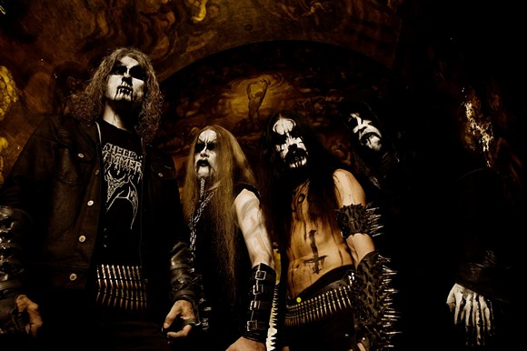

Black Metal
Influences
Black Metal is influenced by Thrash Metal, Death Metal and, as with most forms of extreme metal, Hardcore Punk.
During the 80s, several Thrash Metal and Death Metal bands, such as Slayer, Celtic Frost and Venom began to form a prototype of sorts for Black Metal.
Description
Black Metal doesen't care about being "Heavy". Black Metal artists want intensity and a feeling of evil. To accomplish this, most artists stay in a higher tuning such as E Standard or Eb Standard. Black Metal is played at a fast tempo, with very heavy distortion, usually a lo fi production and high pitch shrieked vocals. Palm Muting is very rarely used, instead replaced with fast, tremolo picked riffs. There is also a huge emphasis placed on creating an atmosphere with the song, this atmosphere usually being evil. Due to this, synth pads are commonly used to crate this atmosphere. Production is usually very trebly, with very little regard to the bass. Also, dissonance in the composition is a must. Using Tritones and Minor Thirds in addition to your run of the mill power chords is a must. Black metal often strays clear of conventional song structure and usually lack clear verses and choruses. Instead, many black metal songs contain lengthy and repetitive instrumental sections.
Black Metal lyrics are usually seen as "evil" by the general public. Topics are usually that of anti-religion and anti-christianity. Lyrics glorifying satanism are very, very commonplace in this genre, leading to the disdain of clergy and concerned mothers everywhere. Misanthropy, death, war, destruction and other downtrodden lyrics are commonplace aswell. Black Metal artists also love to sing about natural phenomena of our world too, such as Darkness, Cold, Forests and Mountains. Lyrics about Mythology and Folklore are quite common, especially among Anti-Christian bands who yearn for a return to the Old Gods.
Black Metal artists and fans are notable for their infatuation with the genres image and their disdain for 'Posers'. Black metal artists very often wear "corpse paint" makeup and lots of black.
Brief History
The First Wave of Black Metal arose with bands such as Bathory and Hellhammer being influenced by Proto-Black bands such as Venom and Celtic Frost. These bands were pretty much just "eviler" versions of thrash metal and speed metal, but weren't really different enough yet to set them apart from the rest of the scene at the time.
This changed with the Second Wave of Black Metal. Mayhem guitarists, Blackthorn and Euronymous, were credited with creating the signature black metal sound, derived from Bathory. Fast, trebly, tremolo picked riffs became the new sound, and everyone in the scene started playing it. Bands were coming out of the woodwork, Mayhem, Emperor, Darkthrone, Nurzum, Immortal, Emperor, Satyricon, there are dozens more. But, in Oslo, a group of musicians who all hung out together, called themselves "The Inner Circle". Now, countless documentaries and books have been written about the events of The Black Circle and Helvete, so i won't tell it again, but, long story short, Dead (Mayhem lead singer) commited suicide, Varg Vikernes (Bassist of Mayhem and sole member of Burzum) burned down some churches then stabbed Euronymous (Guitarist of Mayhem, and head of Deathlike Silence Records) to death. He was imprisoned for this. Just google "Varg Vikernes + Euronymous Murder" if you want to know more. They've made movies about this.
After the death of Euronymous, Black Metal began to flourish in the metal underground all around the world. Many scenes and unique subgenres began to spring up all around the world, and black metal remains one of the top flavors of choice for metalheads globally.
Examples
- Mayhem
- Darkthrone
- Emperor
- Burzum
- Hellhammer
- Bathory
- Satyricon
- Behemoth
- Immortal
Subgenres and Regional Scenes
Major Subgenres
Ambient Black Metal is a style that takes Black Metal's focus on atmosphere to the extreme. Combining Black Metal with elements of Dark Ambient music, such as synthesizers and classical instrumentation. This music is also most often a slow or mid tempo. Burzum and Agalloch play this style.
Pagan Metal combines Black Metal with Folk Metal. These bands typical introduce lyrical themes revolving around Paganism and often times Folk Instruments. These bands include In The Woods, Windir and on a couple albums, Bathory.
Blackened Death Metal is a fusion genre that combines lyrical themes of Black metal and techniques such as Tremolo picking with the heavy, low tunings and Growls of Death Metal. Bands who play this genre are Behemoth and Belphegor.
Notable Regional Scenes
Norwegian Black Metal is the scene in which the 2nd wave of black metal was cultivated. The OG Stuff. Bands like Mayhem, Emperor, Burzum and Darkthrone.
Greek Black Metal is more influenced by Heavy Metal and Death Metal than Norwegian Black Metal